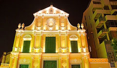

Casino Macao
Ormai ci sono più di 30 diversi Casino Macao, che offrono un mix di giochi d'azzardo occidentali e tradizionali cinesi. Negli ultimi anni il poker è diventato più popolare, e molte sale da gioco su online casino italia propongono partite a soldi, alcune delle quali raggiungono montepremi inauditi, che non si sono mai visti neanche nei grandi casinò di Las Vegas. Ecco una veloce rassegna dei principali casinò di Macao, se sceglierete uno di questi per la vostra esperienza di gioco d’azzardo sicuramente non rimarrete delusi.
Casinò Grand Lisboa
Il Grand Lisboa è stato inaugurato nel 2007, proprio accanto al vecchio Hotel Lisboa. L'albergo è stato recentemente ampliato per un totale di 2362 camere, in gran parte per competere con la recente apertura del Wynn Macau, situato nei paraggi. Ha una vasta area di gioco, che dispone di un totale di oltre 240 tavoli, distribuiti su quattro piani diversi. La selezione dei giochi suonerà familiare a chiunque sia stato in un casinò di Las Vegas: sono disponibili tutti i giochi tradizionali, e negli ultimi anni sono stati aggiunti anche Craps e Poker Texas Hold'em. Come generalmente accade a Macao, c'è una grande enfasi sugli ospiti VIP. Per i clienti di riguardo ci sono delle sale apposite, la maggior parte dei quali propone il Baccarat ad alto limite, per gli ospiti che non hanno paura di far scorrere il denaro a fiumi. Notevole anche PokerStars Macau, la sala da poker dell'omonimo marchio, che ospita quasi tutti i tornei più importanti della città.
Casinò Jai Alai
Uno dei più vecchi casinò di Macao è il Jai Alai, il posto dove andare se siete alla ricerca di un luogo umido. Rispetto alle lussuose strutture ormai comuni nell’ex enclave portoghese, il Jai Alai appare fatiscente e anacronistico. Questo non vuol dire tuttavia che non si possa avere soddisfazione con il gioco d'azzardo. Ci sono oltre 200 slot e circa 60 giochi da tavolo, oltre a quattro stanze VIP per i ricchi clienti che volessero giocare qui invece che in un ambiente più confortevole. In generale però, questo è uno dei pochi posti a Macao accessibile a giocatori di tutte le tasche, e a coloro che vogliono giocare senza fronzoli.
Sands Macau
Il Sands fu il primo casinò aperto da un gruppo esterno ai monopoli tradizionali che avevano dominato Macau per la maggior parte del secolo scorso. L'hotel è molto piccolo, originariamente con solo 51 suite per gli ospiti VIP; questo soprattutto perché il Sands è pubblicizzato come destinazione per i giocatori cinesi che arrivano in giornata, piuttosto che come casinò-albergo. Ora ci sono altre 289 suite aperte al pubblico, anche se i principali clienti sono ancora quelli giornalieri.
Ora che avete letto la recensione dei Casino Macao, certamente vorrete visitarne uno! Nel caso in cui non aveste tempo e denaro per andare fino in Cina, ma desiderate comunque provare l'emozione dei casinò, potete giocare online su Party Casino. Siamo certi che la selezione dei giochi vi piacerà, e vi farà sentire come se foste a Las Vegas!